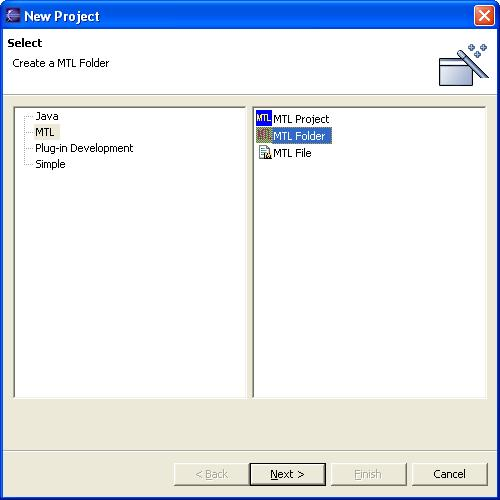
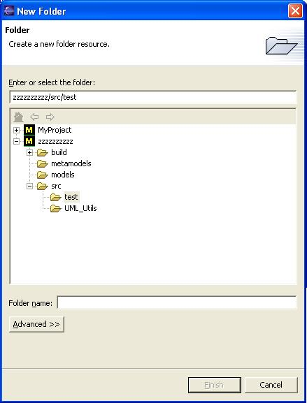

You can create a new subdirectory (folder) from within Eclipse by selecting File → New → MTL Folder...
If you are working in a perspective other than MTL, you
may not see MTL File... as a choice in the File → New
menu. In that case, select Other.... This will show a dialog
that allows you to select MTL
and MTL Folder and click Next to proceed to the Folder
Name
and select Location.
|  |
| Figure 1: Menu New Folder |
|---|
Whichever path you choose, it will take you to the following page:
|  |
| Figure 2: FileName and Location |
|---|
Select a location from the tree and enter the name of your new
document.
Click Finish .